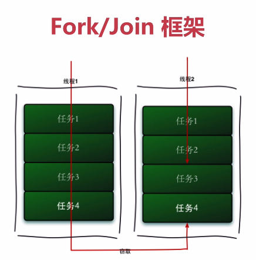
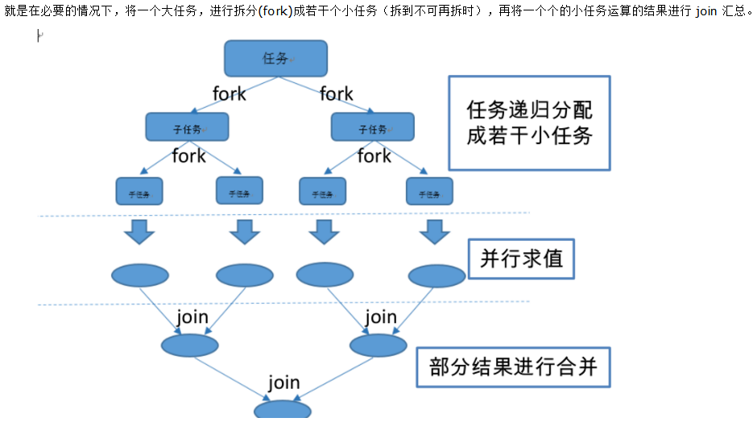
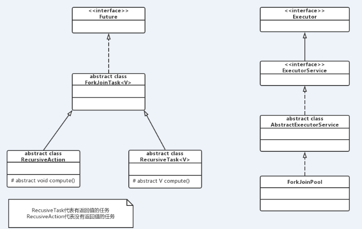
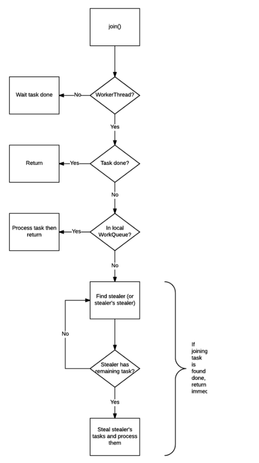
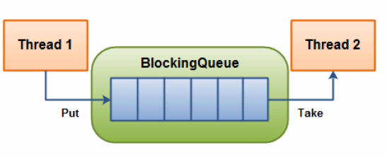

JAVA并发编程与高并发解决方案 - 并发编程 五
| 版本 | 作者 | 内容 |
|---|---|---|
| 2018.5.8 | chuIllusions | J.U.C组件拓展 |
J.U.C 组件拓展
FutureTask
Introduction
FutureTask这个组件是J.U.C里面的，但不是AQS的子类，但是这个类对线程处理的结果很值得我们学习和在项目中使用。
在Java中一般通过继承Thread类或者实现Runnable接口这两种方式来创建多线程，但是这两种方式都有个缺陷，就是不能在执行完成后获取执行的结果，在Java 1.5之后提供了Callable和Future接口，通过它们就可以在任务执行完毕之后得到任务的执行结果。
Callable 与 Runnable
Callable接口定义，运行Callable任务可以拿到一个Future对象，表示异步计算的结果。1
2
3
4
5
6
7
8
9
10
public interface Callable<V> {
/**
* 计算结果或失败时扔出异常
* @since 1.5
* @return 计算结果
* @throws 计算失败扔出异常
*/
V call() throws Exception;
}
Runnable接口定义，由于run()方法返回值为void类型，所以在执行完任务之后无法返回任何结果。1
2
3
4
5
6
7
8
9
public interface Runnable {
/**
* 当一个对象实现<code>Runnable</code>接口创建一个线程，这个对象通过覆写
* run方法处理线程逻辑，并且Thread类启动该线程，执行Runnable处理线程逻辑
* @since 1.0
*/
public abstract void run();
}
&emsp可以看到Callable是个泛型接口，泛型V就是要call()方法返回的类型。Callable接口和Runnable接口很像，都可以被另外一个线程执行，Callable功能更强大些，正如前面所说的，Runnable不会返回数据也不能抛出异常，而Callable可以有返回值与可以抛出异常。
Future
Future接口代表异步计算的结果，通过Future接口提供的方法可以查看异步计算是否执行完成，或者等待执行结果并获取执行结果，同时还可以取消执行。也就是说Future就是对于具体的Runnable或者Callable任务的执行结果进行取消、查询是否完成、获取结果。通常不能从线程中获得方法的返回值，这时Future就出场了，Future可以监控目标线程调用call()的情况。总结来说，Future可以得到线程任务方法的返回值。1
2
3
4
5
6
7
8
9
10
11
12
13
14
15
16
17
18
19
20
21
22
23
24
25
26
27
28
29
30
31
32
33
34
35
36
37public interface Future<V> {
/*
* 取消异步任务的执行。
* 如果异步任务已经完成或者已经被取消，或者由于某些原因不能取消，则会返回false；
* 如果任务还没有被执行，则会返回true并且异步任务不会被执行；
* 如果任务已经开始执行了但是还没有执行完成：
* 若mayInterruptIfRunning为true，则会立即中断执行任务的线程并返回true
* 若mayInterruptIfRunning为false，则会返回true且不会中断任务执行线程
*/
boolean cancel(boolean mayInterruptIfRunning);
/*
* 判断任务是否被取消，如果任务在结束(正常执行结束或者执行异常结束)前被取消则返回true，否则返回false。
*/
boolean isCancelled();
/*
* 判断任务是否已经完成，如果完成则返回true，否则返回false。需要注意的是：任务执行过程中发生异常、任务被取消也属于任务已完成，也会返回true。
*/
boolean isDone();
/*
* 获取任务执行结果:
* 如果任务还没完成则会阻塞等待直到任务执行完成
* 如果任务被取消则会抛出CancellationException异常
* 如果任务执行过程发生异常则会抛出ExecutionException异常
* 如果阻塞等待过程中被中断则会抛出InterruptedException异常
*/
V get() throws InterruptedException, ExecutionException;
/*
* 带超时时间的get()版本，如果阻塞等待过程中超时则会抛出TimeoutException异常。
*/
V get(long timeout, TimeUnit unit)
throws InterruptedException, ExecutionException, TimeoutException;
}
因为Future只是一个接口，所以是无法直接用来创建对象使用的，因此就有了下面的FutureTask。
FutureTask
Future只是一个接口，不能直接用来创建对象，FutureTask是Future的实现类。
public interface RunnableFuture<V> extends Runnable, Future<V> {}1
2
3
4
5
6
7
8
9
10
11
12
13public class FutureTask<V> implements RunnableFuture<V> {
public FutureTask(Callable<V> callable) {
if (callable == null)
throw new NullPointerException();
this.callable = callable;
this.state = NEW; // ensure visibility of callable
}
public FutureTask(Runnable runnable, V result) {
this.callable = Executors.callable(runnable, result);
this.state = NEW; // ensure visibility of callable
}
}
从上面两个类结构，可以得知FutureTask最终还是执行Callable类型的任务。如果在FutureTask构造函数中传入Runnable，会转换成Callable类型。
FutureTask实际上实现了Runnable与Future接口，所以它既可以作为Runnable被线程执行，又可以作为Future得到Callable的返回值。好处：假设有个很费时的逻辑需要计算，并且返回这个计算值，同时这个值又不是马上需要，那么就可以使用这个组合，用另外一个线程计算返回值，而当前线程在使用这个返回值之前，可以做其他的操作，等到需要这个返回值时，才通过Future得到。
案例
1 | 4j |
以上Future与以下FutureTask要实现的效果是一样的。
1 | 4j |
Fork/Join
Introduction
Fork/Join框架是Java7提供了的一个用于并行执行任务的框架， 是一个把大任务分割成若干个小任务，最终汇总每个小任务结果后得到大任务结果的框架。它的思想与MapReduce类似，从字面上理解，Fork即把一个大任务，切割成若干个子任务并行执行，Join即把若干个子任务结果进行合并，最后得到大任务的结果，主要采取工作窃取算法。
工作窃取（work-stealing）算法是指某个线程从其他队列里窃取任务来执行。

假如我们需要做一个比较大的任务，我们可以把这个任务分割为若干互不依赖的子任务，为了减少线程间的竞争，于是把这些子任务分别放到不同的队列里，并为每个队列创建一个单独的线程来执行队列里的任务，线程和队列一一对应，比如A线程负责处理A队列里的任务。但是有的线程会先把自己队列里的任务干完，而其他线程对应的队列里还有任务等待处理。干完活的线程与其等着，不如去帮其他线程干活，于是它就去其他线程的队列里窃取一个任务来执行。而在这时它们会访问同一个队列，所以为了减少窃取任务线程和被窃取任务线程之间的竞争，通常会使用双端队列，被窃取任务线程永远从双端队列的头部拿任务执行，而窃取任务的线程永远从双端队列的尾部拿任务执行。
工作窃取算法的优点是充分利用线程进行并行计算，并减少了线程间的竞争，其缺点是在某些情况下还是存在竞争，比如双端队列里只有一个任务时。并且消耗了更多的系统资源，比如创建多个线程和多个双端队列。
对于Fork/Join框架而言，当一个任务正在等待它使用Join操作创建的子任务结束时，执行这个任务的工作线程，寻找其他并未被执行的任务，并开始执行，通过这种方式，线程充分利用它们的运行时间，来提高应用程序的性能。为了实现这个目标，Fork/Join框架执行的任务有一些局限性：
- 任务只能使用Fork、Join操作来作为同步机制，如果使用了其他同步机制，那他们在同步操作时，工作线程则不能执行其他任务。如：在框架的操作中，使任务进入睡眠，那么在这个睡眠期间内，正在执行这个任务的工作线程，将不会执行其他任务
- 所执行的任务，不应该执行IO操作，如读和写数据文件
- 任务不能抛出检查型异常，必须通过必要的代码处理它们
核心是两个类：ForkJoinTask与ForkJoinPool。Pool主要负责实现，包括上面所介绍的工作窃取算法，管理工作线程和提供关于任务的状态以及它们的执行信息；Task主要提供在任务中，执行Fork与Join操作的机制。
引用[并行流与串行流 Fork/Join框架的一张图来说明过程

Example
我们先来看一下Fork/Join框架的演示：
1 | 4j |
通过这个例子让我们再来进一步了解ForkJoinTask，任务类继承RecursiveTask，ForkJoinTask与一般的任务的主要区别在于它需要实现compute()方法，在这个方法里，首先需要判断任务是否足够小，如果足够小就直接执行任务。如果不足够小，就必须分割成两个子任务，每个子任务在调用fork()方法时，又会进入compute()方法，看看当前子任务是否需要继续分割成孙任务，如果不需要继续分割，则执行当前子任务并返回结果。使用join()方法会等待子任务执行完并得到其结果。
Main Class
上面提到，Fork/Join框架中的两个核心类ForkJoinTask与ForkJoinPool，并且从上面的例子可以知道，声明ForkJoinTask后，将其加入到ForkJoinPool中，并返回一个Future对象。
ForkJoinPool：ForkJoinTask需要通过ForkJoinPool来执行，任务分割出的子任务会添加到当前工作线程所维护的双端队列中，进入队列的头部。当一个工作线程的队列里暂时没有任务时，它会随机从其他工作线程的队列的尾部获取一个任务。ForkJoinTask：我们要使用ForkJoin框架，必须首先创建一个ForkJoin任务。它提供在任务中执行fork()和join()操作的机制，通常情况下我们不需要直接继承ForkJoinTask类，而只需要继承它的子类，Fork/Join框架提供了以下两个子类：RecursiveAction：用于没有返回结果的任务。RecursiveTask：用于有返回结果的任务。

Exception
ForkJoinTask在执行的时候可能会抛出异常，但是我们没办法在主线程里直接捕获异常，所以ForkJoinTask提供了isCompletedAbnormally()方法来检查任务是否已经抛出异常或已经被取消了，并且可以通过ForkJoinTask的getException()方法获取异常。1
2
3
4
5
6
7
8
9
10
11
12
13
14
15
16
17
18
19
20
21
22
23
24
25
26
27
28public abstract class ForkJoinTask<V> implements Future<V>, Serializable {
/** ForkJoinTask运行状态 */
volatile int status; // 直接被ForkJoin池和工作线程访问
static final int DONE_MASK = 0xf0000000; // mask out non-completion bits
static final int NORMAL = 0xf0000000; // must be negative
static final int CANCELLED = 0xc0000000; // must be < NORMAL
static final int EXCEPTIONAL = 0x80000000; // must be < CANCELLED
static final int SIGNAL = 0x00010000; // must be >= 1 << 16
static final int SMASK = 0x0000ffff; // short bits for tags
/**
* @Ruturn 任务是否扔出异常或被取消
*/
public final boolean isCompletedAbnormally() {
return status < NORMAL;
}
/**
* 如果计算扔出异常，则返回异常
* 如果任务被取消了则返回CancellationException。如果任务没有完成或者没有抛出异常则返回null
*/
public final Throwable getException() {
int s = status & DONE_MASK;
return ((s >= NORMAL) ? null :
(s == CANCELLED) ? new CancellationException() :
getThrowableException());
}
}
Analysis
ForkJoinPool
1 | public class ForkJoinPool extends AbstractExecutorService { |
ForkJoinPool中源码挺强大的，我只抽取了重要的部分进行分析。
ForkJoinPool中维护了一组WorkQueue，也就是工作队列，工作队列中又维护了一个工作线程ForkJoinWorkerThread与一组工作任务ForkJoinTaskWorkQueue是一个双端队列（Deque），即 Double Ended Queue ，Deque是一种具有队列和栈的性质的数据结构，双端队列中的元素可以从两端弹出，其限定插入和删除操作在表的两端进行。- 每个工作线程在运行中产生新的任务（通常是因为调用了
fork()）时，会放入工作队列的队尾，并且工作线程在处理自己的工作队列时，使用的是LIFO方式，也就是说每次从队尾取出任务来执行。 - 每个工作线程在处理自己的工作队列同时，会尝试窃取一个任务（或是来自于刚刚提交到 pool 的任务，或是来自于其他工作线程的工作队列），窃取的任务位于其他线程的工作队列的队首，也就是说工作线程在窃取其他工作线程的任务时，使用的是 FIFO 方式。
- 在遇到 join() 时，如果需要 join 的任务尚未完成，则会先处理其他任务，并等待其完成。
- 在既没有自己的任务，也没有可以窃取的任务时，进入休眠。
1 | public class ForkJoinPool extends AbstractExecutorService { |
从上面来看，ForkJoinPool所提供的submit()方法中，有几个重载。
ForkJoinPool自身也拥有工作队列，这些工作队列的作用是用来接收由外部线程（非 ForkJoinThread 线程）提交过来的任务，而这些工作队列被称为 submitting queue 。
ForkJoinTask
从上面的例子，我们可以知道，任务的操作，重要的是fork() 和 join()，我们可以假设这两个的作用：
fork()：开启一个新线程（或是重用线程池内的空闲线程），将任务交给该线程处理。join()：等待该任务的处理线程处理完毕，获得返回值。
但对我的这个假设，很明显就不对的，当任务分解得越来越细时，所需要的线程数就会越来越多，而且大部分线程处于等待状态。从ForkJoinPool的构造函数中，可以知道，工作线程的数量是指定的，或者说是按照系统默认的。
可以得出，我的假设是错误的，因此，并不是每个 fork() 都会促成一个新线程被创建，而每个 join() 也不是一定会造成线程被阻塞。这一点可以体现出work stealing 算法的优势。
1 | public abstract class ForkJoinTask<V> implements Future<V>, Serializable { |
fork()做的工作只有一件事，既是把任务推入当前工作线程的工作队列里。join()的工作则复杂得多，也是join()可以使得线程免于被阻塞的原因- 检查调用
join()的线程是否是ForkJoinThread线程。如果不是（例如 main 线程），则阻塞当前线程，等待任务完成。如果是，则不阻塞。 - 查看任务的完成状态，如果已经完成，直接返回结果。
- 如果任务尚未完成，但处于自己的工作队列内，则完成它。
- 如果任务已经被其他的工作线程偷走，则窃取这个小偷的工作队列内的任务（以 FIFO 方式），执行，以期帮助它早日完成欲 join 的任务。
- 如果偷走任务的小偷也已经把自己的任务全部做完，正在等待需要 join 的任务时，则找到小偷的小偷，帮助它完成它的任务。
- 递归地执行第5步。
- 检查调用

以上部分内容引用于Java 并发编程笔记：如何使用 ForkJoinPool 以及原理
BlockingQueue
引用一篇相关文章的一段话，初探BlockingQueue：BlockingQueue
多线程环境中，通过队列可以很容易实现数据共享，比如经典的“生产者”和“消费者”模型中，通过队列可以很便利地实现两者之间的数据共享。假设我们有若干生产者线程，另外又有若干个消费者线程。如果生产者线程需要把准备好的数据共享给消费者线程，利用队列的方式来传递数据，就可以很方便地解决他们之间的数据共享问题。但如果生产者和消费者在某个时间段内，万一发生数据处理速度不匹配的情况呢？理想情况下，如果生产者产出数据的速度大于消费者消费的速度，并且当生产出来的数据累积到一定程度的时候，那么生产者必须暂停等待一下（阻塞生产者线程），以便等待消费者线程把累积的数据处理完毕，反之亦然。然而，在concurrent包发布以前，在多线程环境下，我们每个程序员都必须去自己控制这些细节，尤其还要兼顾效率和线程安全，而这会给我们的程序带来不小的复杂度。好在此时，强大的concurrent包横空出世了，而他也给我们带来了强大的BlockingQueue。（在多线程领域：所谓阻塞，在某些情况下会挂起线程（即阻塞），一旦条件满足，被挂起的线程又会自动被唤醒）

BlockingQueue即为阻塞队列，是一个先进先出的队列，在某些情况下，对阻塞队列的访问可能会造成阻塞，被阻塞的情况主要有两种：
- 当队列满时，进行入队列操作。当一个线程试图对一个已经满了的队列进行入队操作时， 他将会阻塞，除非有另一个线程做了出队列的操作。
- 当队列空时，进行出队列操作。当一个线程试图对一个空队列进行出队操作时，他也将会被阻塞，除非有另一个线程做了入队的操作。
阻塞队列是线程安全的，主要用在生产者与消费者的场景。上图就是线程生产和消费的场景，负责生产的线程不断的制造新对象并插入到阻塞队列中，直到达到队列的上限值，从而被阻塞，直到消费线程对队列进行消费。同理，负责消费的线程不断的从队列中消费对象，直到这个队列为空，这时消费线程将会被阻塞，除非队列中有新的队列被生产加入。
1 | public interface BlockingQueue<E> extends Queue<E> {} |
BlockingQueue 是一个接口，继承自 Queue，所以其实现类也可以作为 Queue 的实现来使用，而 Queue 又继承自 Collection 接口。
BlockingQueue对插入操作、移除操作、获取元素操作提供了四种不同的方法用于不同的场景中使用。我们使用不同的方法，都会有不同的表现。BlockingQueue 的各个实现都遵循了这些规则：
| Throws Exception | Special Value | Blocks | Times Out | |
|---|---|---|---|---|
| insert | add(o) | offer(o) | put(o) | offer(o,timeout,timeunit) |
| remove | remove(o) | poll() | take() | poll(timeout,timeunit) |
| examine | element() | peek() | not applicable | not applicable |
- Throws Exception：抛出异常。如果不能马上进行，则抛出异常。
- Special Value：如果不能马上进行，则返回特殊值，一般是True或False
- Blocks：如果不能马上进行，则操作会被阻塞，直到这个操作成功
- Times Out：如果不能马上进行，操作会被阻塞指定的时间。如果指定时间还未执行，则返回特殊值，一般是True或False。
对于BlockingQueue，关注点应该在它的put和take方法上，因为这两个方法是带阻塞的。
BlockingQueue 不接受 null 值的插入，相应的方法在碰到null 的插入时会抛出 NullPointerException 异常。null 值在这里通常用于作为特殊值返回（表格中的第三列），代表 poll 失败。所以，如果允许插入 null 值的话，那获取的时候，就不能很好地用 null 来判断到底是代表失败，还是获取的值就是 null 值。
前面说了，它实现了 java.util.Collection 接口。例如，我们可以用 remove(x) 来删除任意一个元素，但是，这类操作通常并不高效，所以尽量只在少数的场合使用，比如一条消息已经入队，但是需要做取消操作的时候。
BlockingQueue 的实现都是线程安全的，但是批量的集合操作如 addAll, containsAll, retainAll 和 removeAll 不一定是原子操作。如 addAll(c) 有可能在添加了一些元素后中途抛出异常，此时 BlockingQueue 中已经添加了部分元素，这个是允许的，取决于具体的实现。
BlockingQueue 在生产者-消费者的场景中，是支持多消费者和多生产者的，说的其实就是线程安全问题。BlockingQueue 是一个比较简单的线程安全容器。作为BlockingQueue的使用者，我们再也不需要关心什么时候需要阻塞线程，什么时候需要唤醒线程，因为这一切BlockingQueue都给你一手包办了。
这里补充一点，一般所说的无界队列，并不是大小不限制的，只是它的大小是Integer.MAX_VALUE，即int类型能够表示的最大值，也可以理解为大小是(2的31次方)-1
BlockingQueue家庭中实现类主要有以下几个，常用的是ArrayBlockingQueue与LinkedBlockingQueue，下文将会对这两个类作详细介绍。其他成员将简单介绍。
- ArrayBlockingQueue
- LinkedBlockingQueue
- DelayQueue：
- PriorityBlockingQueue
- SynchronousQueue
ArrayBlockingQueue
Introdution
有界的阻塞队列，内部实现是一个数组，有边界的意思是：容量是有限的，必须初始化时，指定它的容量大小，以先进先出的方式存储数据，最新插入的对象在尾部，最先移除的对象在头部。
1 | public class ArrayBlockingQueue<E> extends AbstractQueue<E> |
从上面的类结构，可以知道：
ArrayBlockingQueue在生产者放入数据和消费者获取数据，都是共用同一个锁对象，由此也意味着两者无法真正并行运行。按照实现原理来分析，ArrayBlockingQueue完全可以采用分离锁，从而实现生产者和消费者操作的完全并行运行。Doug Lea之所以没这样去做，也许是因为ArrayBlockingQueue的数据写入和获取操作已经足够轻巧，以至于引入独立的锁机制，除了给代码带来额外的复杂性外，其在性能上完全占不到任何便宜。- 通过构造函数得知，参数
fair控制对象的内部锁是否采用公平锁，默认采用非公平锁。 - items、takeIndex、putIndex、count等属性并没有使用volatile修饰，这是因为访问这些变量（通过方法获取）使用都是在锁块内，并不存在可见性问题，如
size() - 另外有个独占锁lock用来对出入队操作加锁，这导致同时只有一个线程可以访问入队出队。
Put()
我们通过源码，分析一下Put方法的实现：1
2
3
4
5
6
7
8
9
10
11
12
13
14
15
16
17
18
19
20
21
22
23
24
25
26
27
28
29
30
31
32
33
34
35
36
37
38
39
40
41
42
43/** 进行入队操作 */
public void put(E e) throws InterruptedException {
//e为null，则抛出NullPointerException异常
checkNotNull(e);
//获取独占锁
final ReentrantLock lock = this.lock;
/**
* lockInterruptibly()
* 获取锁定，除非当前线程为interrupted
* 如果锁没有被另一个线程占用并且立即返回，则将锁定计数设置为1。
* 如果当前线程已经保存此锁，则保持计数将递增1，该方法立即返回。
* 如果锁被另一个线程保持，则当前线程将被禁用以进行线程调度，并且处于休眠状态
*
*/
lock.lockInterruptibly();
try {
//空队列
while (count == items.length)
//进行条件等待处理
notFull.await();
//入队操作
enqueue(e);
} finally {
//释放锁
lock.unlock();
}
}
/** 真正的入队 */
private void enqueue(E x) {
// assert lock.getHoldCount() == 1;
// assert items[putIndex] == null;
//获取当前元素
final Object[] items = this.items;
//按下一个插入索引进行元素添加
items[putIndex] = x;
// 计算下一个元素应该存放的下标，可以理解为循环队列
if (++putIndex == items.length)
putIndex = 0;
count++;
//唤起消费者
notEmpty.signal();
}
这里由于在操作共享变量前加了锁，所以不存在内存不可见问题，加过锁后获取的共享变量都是从主内存获取的，而不是在CPU缓存或者寄存器里面的值，释放锁后修改的共享变量值会刷新会主内存中。
另外这个队列是使用循环数组实现，所以计算下一个元素存放下标时候有些特殊。另外insert后调用 notEmpty.signal();是为了激活调用notEmpty.await();阻塞后放入notEmpty条件队列中的线程。
Take()
我们通过源码，分析一下take方法的实现：1
2
3
4
5
6
7
8
9
10
11
12
13
14
15
16
17
18
19
20
21
22
23
24
25
26
27
28public E take() throws InterruptedException {
final ReentrantLock lock = this.lock;
lock.lockInterruptibly();
try {
while (count == 0)
notEmpty.await();
return dequeue();
} finally {
lock.unlock();
}
}
private E dequeue() {
// assert lock.getHoldCount() == 1;
// assert items[takeIndex] != null;
final Object[] items = this.items;
("unchecked")
E x = (E) items[takeIndex];
items[takeIndex] = null;
if (++takeIndex == items.length)
takeIndex = 0;
count--;
//这里有些特殊
if (itrs != null)
//保持队列中的元素和迭代器的元素一致
itrs.elementDequeued();
notFull.signal();
return x;
}
从上面分析可以知道，其实Put操作与Take操作很相似。但是有一点我在上面代码中标识了，继续深入了解：1
2
3
4
5
6
7
8
9
10
11
12
13
14
15
16
17
18
19
20
21
22
23
24
25
26
27
28
29
30//该类的迭代器，所有的迭代器共享数据，队列改变会影响所有的迭代器
transient Itrs itrs = null; //其存放了目前所创建的所有迭代器。
/**
* 迭代器和它们的队列之间的共享数据，允许队列元素被删除时更新迭代器的修改。
*/
class Itrs {
void elementDequeued() {
// assert lock.getHoldCount() == 1;
if (count == 0)
//队列中数量为0的时候，队列就是空的，会将所有迭代器进行清理并移除
queueIsEmpty();
//takeIndex的下标是0，意味着队列从尾中取完了，又回到头部获取
else if (takeIndex == 0)
takeIndexWrapped();
}
/**
* 当队列为空的时候做的事情
* 1. 通知所有迭代器队列已经为空
* 2. 清空所有的弱引用，并且将迭代器置空
*/
void queueIsEmpty() {}
/**
* 将takeIndex包装成0
* 并且通知所有的迭代器，并且删除已经过期的任何对象（个人理解是置空对象）
* 也直接的说就是在Blocking队列进行出队的时候，进行迭代器中的数据同步，保持队列中的元素和迭代器的元素是一致的。
*/
void takeIndexWrapped() {}
}
分析到这里，就有个疑问了，这个迭代器到底是什么时候生成的呢？而且他在出队时，是判断了迭代器不为空的时候才进行操作，而肯定会存在一种情况，那就是迭代器是空的，并未创建，则不进行操作。
通过在源码奔走，我找到了相关内容，如下，还是在我们的ArrayBlockingQueue的源码中：
1 | //从这里知道，在ArrayBlockingQueue对象中调用此方法，才会生成这个对象 |
LinkedBlockingQueue
Introduction
基于链表的阻塞队列，同ArrayListBlockingQueue类似，其内部也维持着一个数据缓冲队列（该队列由一个链表构成），当生产者往队列中放入一个数据时，队列会从生产者手中获取数据，并缓存在队列内部，而生产者立即返回；只有当队列缓冲区达到最大值缓存容量时（LinkedBlockingQueue可以通过构造函数指定该值），才会阻塞生产者队列，直到消费者从队列中消费掉一份数据，生产者线程会被唤醒，反之对于消费者这端的处理也基于同样的原理。
LinkedBlockingQueue之所以能够高效的处理并发数据，还因为其对于生产者端和消费者端分别采用了独立的锁来控制数据同步，这也意味着在高并发的情况下生产者和消费者可以并行地操作队列中的数据，以此来提高整个队列的并发性能。
作为开发者，我们需要注意的是，如果构造一个LinkedBlockingQueue对象，而没有指定其容量大小，LinkedBlockingQueue会默认一个类似无限大小的容量（Integer.MAX_VALUE），这样的话，如果生产者的速度一旦大于消费者的速度，也许还没有等到队列满阻塞产生，系统内存就有可能已被消耗殆尽了。
LinkedBlockingQueue是一个使用链表完成队列操作的阻塞队列。链表是单向链表，而不是双向链表。
1 | public class LinkedBlockingQueue<E> extends AbstractQueue<E> |
通过其构造函数，得知其可以当做无界队列也可以当做有界队列来使用。
这里用了两把锁分别是takeLock与putLock、两个Condition分别是notEmpty与notFull，它们是这样搭配的：
- 如果要获取（take）一个元素，需要获取 takeLock 锁，但是获取了锁还不够，如果队列此时为空，还需要队列不为空（notEmpty）这个条件（Condition）。
- 如果要插入（put）一个元素，需要获取 putLock 锁，但是获取了锁还不够，如果队列此时已满，还需要队列不是满的（notFull）这个条件（Condition）。
注意：从上面的构造函数中，这里会初始化一个空的头结点，那么第一个元素入队的时候，队列中就会有两个元素。读取元素时，也总是获取头节点后面的一个节点。count 的计数值不包括这个头节点。
Put()
通过源码分析，透析put()方法的流程
1 | public class LinkedBlockingQueue<E> extends AbstractQueue<E> |
Take
1 | public class LinkedBlockingQueue<E> extends AbstractQueue<E> |
与 ArrayBlockingQueue 对比
ArrayBlockingQueue是共享锁，粒度大，入队与出队的时候只能有1个被执行，不允许并行执行。LinkedBlockingQueue是独占锁，入队与出队是可以并行进行的。当然这里说的是读和写进行并行，两者的读读与写写是不能并行的。总结就是LinkedBlockingQueue可以并发读写。ArrayBlockingQueue和LinkedBlockingQueue间还有一个明显的不同之处在于，前者在插入或删除元素时不会产生或销毁任何额外的对象实例，而后者则会生成一个额外的Node对象。这在长时间内需要高效并发地处理大批量数据的系统中，其对于GC的影响还是存在一定的区别。
DelayQueue
DelayQueue是一个无界阻塞队列，只有在延迟期满时才能从中提取元素。该队列的头部是延迟期满后保存时间最长的Delayed元素。
存放到DelayDeque的元素必须继承Delayed接口。Delayed接口使对象成为延迟对象，它使存放在DelayQueue类中的对象具有了激活日期，该接口强制执行下列两个方法：
- CompareTo(Delayed o)：Delayed接口继承了Comparable接口，因此有了这个方法
- getDelay(TimeUnit unit):这个方法返回到激活日期的剩余时间，时间单位由单位参数指定
使用场景
- 关闭空闲连接。服务器中，有很多客户端的连接，空闲一段时间之后需要关闭之。
- 缓存。缓存中的对象，超过了空闲时间，需要从缓存中移出。
- 任务超时处理。在网络协议滑动窗口请求应答式交互时，处理超时未响应的请求。
PriorityBlockingQueue
SynchronousQueue
它是一个特殊的队列，它的名字其实就蕴含了它的特征 – - 同步的队列。为什么说是同步的呢？这里说的并不是多线程的并发问题，而是因为当一个线程往队列中写入一个元素时，写入操作不会立即返回，需要等待另一个线程来将这个元素拿走；同理，当一个读线程做读操作的时候，同样需要一个相匹配的写线程的写操作。这里的 Synchronous 指的就是读线程和写线程需要同步，一个读线程匹配一个写线程，同理一个写线程匹配一个读线程。
不像ArrayBlockingQueue、LinkedBlockingDeque之类的阻塞队列依赖AQS实现并发操作，SynchronousQueue直接使用CAS实现线程的安全访问。
较少使用到 SynchronousQueue 这个类，不过它在线程池的实现类 ScheduledThreadPoolExecutor 中得到了应用。
1 | public class SynchronousQueue<E> extends AbstractQueue<E> |